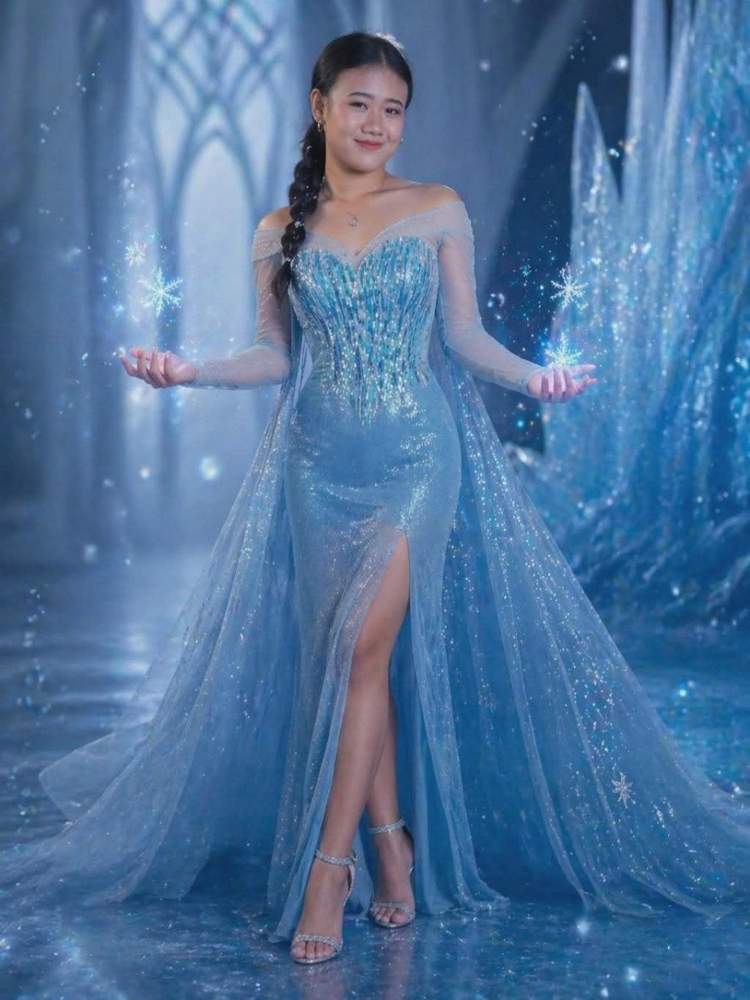

About Me
I am Ivy O. Brutas, currently a third-year Bachelor of Science in Office Administration (BSOA) student at Camarines Sur Polytechnic Colleges. My zodiac sign is Libra, and I value balance in my family, friendships, and life. I prefer to keep things simple, honest, and clear in the way I interact with others. I also enjoy learning new things that help me grow personally and academically.
My Goals
My happiness comes from my strong connection with my family, which I consider my true success. I aim to achieve success not only for personal growth but also to prove my abilities to the people who matter most. Despite doubts from others, I am motivated to work hard and show my worth. I am deeply grateful for my parents' sacrifices, and I strive to make them proud by becoming the best daughter I can be. With determination and love, I am committed to reaching my dreams, inspiring others, and building a successful future for my family.
My Daily Communication
Technology serves as an essential tool that enables me to maintain meaningful connections while supporting my academic pursuits. Through my cellphone, I am able to communicate with my family members who reside abroad, utilizing its instant calling and messaging features to sustain our close relationship despite the distance. Meanwhile, my laptop provides efficient access to academic resources, allowing me to conduct research and complete my studies effectively. These devices play a vital role in both my personal communication and educational development.
My Hobbies and Talents
Dancing is my passion and my way to fight loneliness while staying at home. Whenever I feel alone or sad, it serves as my companion and helps me express my emotions through movement. It turns my quiet and empty days into something happy and meaningful. Truly, dancing is my source of joy and strength that keeps me company even when I am by myself.
My Professional Development
I actively participated in professional development activities, including the 2nd and 3rd Regional Congress for Future Administrative Professionals (RCFAP) and the Corporate Fashion Show, all held at the CSPC Main Campus. These experiences allowed me to expand my knowledge, develop my skills, and gain confidence through active participation. I found these events both enjoyable and enriching, as they contributed positively to my personal and professional growth.


My Insights
The Living in the IT Era course helped me understand technology in a way that actually makes sense in my daily life. Before, I only used gadgets without really knowing how they worked, but now I understand the difference between IT and ICT and how hardware, software, and people all work together. I also found it interesting how simple things like binary numbers are used in computers, and I’m proud that I can now understand and convert them. This subject made me realize that technology is not just tools, but something that depends on how people use it. Overall, it made me more aware and confident when using technology. Creating this e-Portfolio website was both challenging and fulfilling for me. At first, I struggled with organizing my ideas and making everything look presentable, but I slowly learned how to design it in a clear and simple way. Through this experience, I became more creative and patient, especially when fixing mistakes. In the end, I felt proud because I was able to create something that shows my skills and effort.